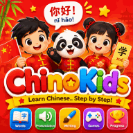

The Ultimate Guide to Teaching Chinese to Kids at Home
Mandarin Chinese is rapidly becoming one of the most valuable global languages. While it may seem daunting to adults, young children have a unique, natural ability to acquire its complex tones and visual characters. This comprehensive guide explores practical, game-based strategies to introduce Chinese to your child at home without any stress.
1. The Science: Why Young Children Learn Chinese Effortlessly
Mandarin is a tonal language, meaning that a single syllable (like "ma") can have completely different meanings depending on the pitch contour used. Adults often struggle with this auditory flexibility, but pediatric cognitive science shows that the brains of children under the age of 10 are uniquely wired to distinguish, register, and mimic these subtle tonal variations naturally.
By exposing your child to Chinese early, you are not just teaching them vocabulary; you are expanding their auditory capacity, boosting their problem-solving skills, and giving them a powerful cognitive advantage that lasts a lifetime.
2. Make Tones Fun Through Music and Rhythm
Never start by forcing your child to memorize static grammar rules. Instead, let music do the heavy lifting! Tonal languages are naturally musical. Singing simple Chinese nursery rhymes (such as "Two Tigers" or "Finding Friends") allows children to absorb the four Mandarin tones effortlessly. Moving their bodies to the rhythm of the songs helps embed the sound structures directly into their long-term muscle and cognitive memory.
3. Hanzi as Visual Art: Learning Characters Like Puzzles
One of the most intimidating parts of Chinese for adults is the writing system. However, Chinese characters (Hanzi) evolved from ancient pictographs—drawings of real-world objects! Turn writing into an artistic game:
- Show them how the character for "mountain" (山 - shān) looks like three peaks.
- Show how "person" (人 - rén) looks like someone walking.
- Let them trace characters in colorful sand, shaving cream, or draw them with finger paints. Treating characters like visual puzzles completely removes the fear of learning to write.
4. Establish a Consistent "Playful Routine"
To see real progress, you don't need hours of rigorous study. In fact, that will only frustrate your child. Consistency beats intensity every single time. Dedicating just 10 to 15 minutes a day to a playful Chinese-speaking activity—like labeling a few toy animals or playing an interactive digital challenge—is infinitely more effective than a weekly two-hour tutoring session.

The ultimate gamified Chinese learning app! Designed especially for primary school kids to master writing Hanzi, speaking core Mandarin vocabulary, and playing interactive tonal games.
5. The Golden Rule: Celebrate the Journey
The most important part of early language acquisition is confidence. Praise your child’s efforts, not just their perfect pronunciation. When they feel proud of their little achievements, their intrinsic motivation will drive them to explore more. Turn learning into a shared adventure, download interactive tools, and enjoy watching your little global citizen grow!
Frequently asked questions
Is Chinese too difficult for young children?
Not at all. Since children learn phonetically and visually, they acquire Chinese as naturally as any other language.
Does the app teach writing characters?
Yes! ChinoKids includes interactive stroke-by-stroke guidance to make writing Hanzi fun.
Do parents need to speak Chinese to help?
No. The app provides high-quality native audio, helping both parent and child learn together.